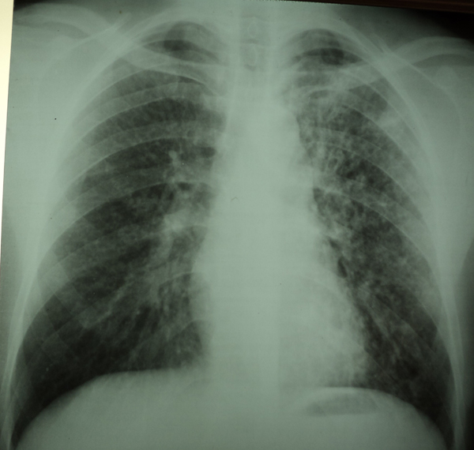

Réponses cas clinique N°36
1- La radiographie thoracique de face montre la présence des opacités micronodulaires en tête d’épingle bilatérales et diffuses avec présence d’opacités réticulaires prédominant au niveau des bases (syndrome interstitiel) : aspect de miliaire.
2- Vu le jeune âge du patient, l’intradermoréaction à la tuberculine positive à 15mm, l’altération de l’état général et les anomalies radiologiques on évoque une miliaire tuberculeuse. En effet la recherche de BK dans les expectorations chez ce patient est revenue positive.
3- La miliaire tuberculeuse est une forme grave de la tuberculose, il faut faire un bilan d’extension à la recherche d’autres localisations pouvant engager le pronostic vital notamment la localisation neuroméningée par la réalisation d’une ponction lombaire, un examen ophtalmologique à la recherche de nodules de Bochut, un examen cytobactériologique des urines à la recherche de BK, et d’autres localisations hématologique, abdominale…
Il faut aussi s’interroger sur l’éventualité d’un terrain d’immunodépression soit du à un traitement immunosuppresseur, un diabète ou une infection par le VIH.
